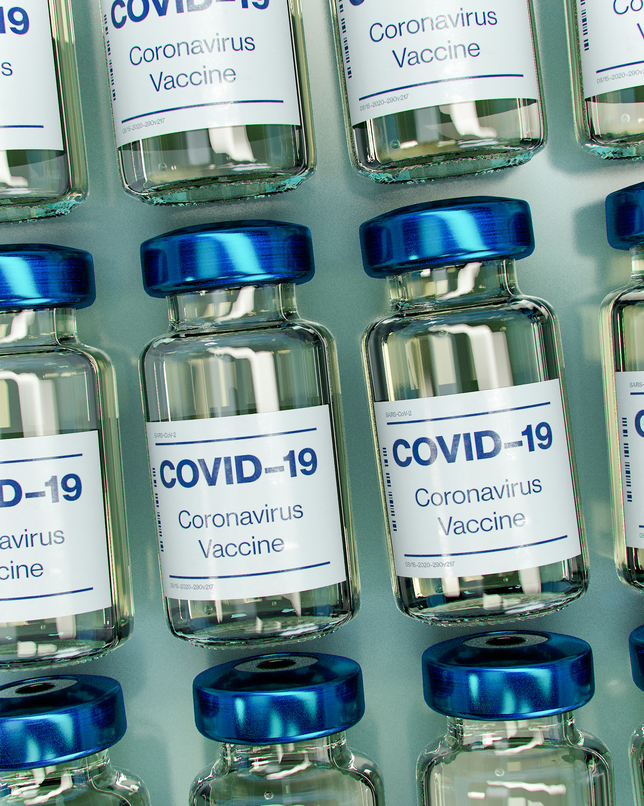

The World Health Organization (WHO) emphasizes equitable  access to COVID-19 vaccines worldwide. They recommend a simplified single-dose regimen for primary immunization for most vaccines, aiming to enhance acceptance and uptake, particularly among high-risk populations. While the monovalent Omicron XBB vaccines offer modestly enhanced protection compared to other variants, any WHO emergency-use listed or prequalified vaccine, whether bivalent variant-containing or monovalent index virus vaccines, can be utilized when monovalent XBB vaccines are unavailable. The priority remains to continue progress in vaccination efforts, especially for those most vulnerable to severe disease.
Covishield is one of the first two vaccines that were approved for emergency use by the Indian Government. Even countries in Europe are using the drug. The doses are developed by the University of Oxford in partnership with AstraZeneca. They are produced in Pune at the Serum Institute of India. The price of the Covishield has now been reduced to Rs 300 for State governments.
Bharat Biotech's Covaxin was given a nod in January for emergency use. Bharat Biotech manufactures this coronavirus vaccine in India in partnership with the Indian Council of Medical Research (ICMR) and the National Institute of Virology. The cost of Covaxin is Rs 600 for the State government and Rs 1200 for private hospitals.
Sputnik is a two-dose vaccine in which the second dose is administered after a gap of 21 days. For both the jabs two different vectors are used. It uses two dissimilar disarmed strains of the adenovirus that cause the common cold. They are used as vectors to deliver the jab. Injecting two different vectors can minimize the risk of the immune system developing resistance to the initial vector.